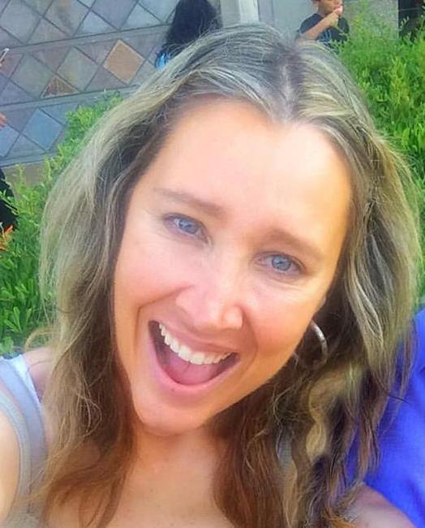

Liga Irene Danenberg b. 1966
Peter's sister.
Living. As for every living relative on this site, the birth date is given by year only, and no current address is shown.
Liga Irene Danenberg was born in 1966 in Santa Barbara, California, United States1,2,3, the daughter of Peter Valentins Danenbergs and Kathleen Diane Hall2,36.
Family
- Parents
- Peter Valentins Danenbergs b. 1942 and Kathleen Diane Hall b. 1947 documented
Life events
| Event | Date | Place and details |
|---|---|---|
| Born | 1966 | Santa Barbara, California, United States1,2,3 |
| Lived | bet 1970 and 1976 | Madison, Wisconsin, United States4 |
| Lived | bet 1978 and 1984 | La Cañada Flintridge, California, United States5 |
| Education | 1984 | Glendale, California, United States Glendale High School, Glendale, California, class of 1984 — she posts in the alumni group "Glendale HS Class of '84 (California)" as a member of that class. The family were then living in the Glendale/La Crescenta area north-east of Los Angeles. An anonymous commenter on a 2013 blog post about…18 |
| Work | bet Feb 1996 and May 1997 | Santa Monica, California, United States Java Developer at Skunk New Media, Santa Monica, California, February 1996 – May 1997: "Entertainment web sites and Java applications". Her first job out of USC, at the beginning of the commercial web.21 |
| Lived | bet 1 Sep 1996 and 12 Jul 2001 | Los Angeles, California, United States According to an online family tree6 |
| Lived | 1 Apr 1997 | West Hollywood, California, United States According to an online family tree7,8 |
| Work | bet Aug 1997 and May 2000 | Culver City, California, United States Manager, IT at Sony Online Entertainment, Culver City, California, August 1997 – May 2000: "Sony Online, Columbia Tristar, Gaming and web site apps". Her own summary calls this period "internet development for entertainment… (Sony Pictures…)".22 |
| Work | bet Jun 2000 and Jan 2002 | Los Angeles, California, United States Manager of Technology at PacketVideo, Los Angeles, June 2000 – January 2002: "Wireless Video Streaming apps for cell phones" — video on mobile phones five years before the smartphone.23 |
| Education | 2001 | Los Angeles, California, United States MBA in IT Strategic Management, University of Southern California (Marshall School), begun 2001; no end date given. The listed activity is "Global Studies, Tokyo Japan" — i.e. the programme took her to Tokyo. A dated place worth the map.19 |
| Lived | 12 Jul 2001 | Oakland, California, United States According to an online family tree9 |
| Lived | 1 Feb 2003 | West Hollywood, California, United States According to an online family tree10 |
| Work | bet Feb 2003 and May 2003 | Los Angeles, California, United States Music Video Department, Capitol Records, Hollywood, California, February – May 2003: "Worked with Music Video Supervisor on set and in media room". A short stint, but the one piece of her working life that was purely in music.24 |
| Work | bet 25 Mar 2003 and 1 Nov 2005 | West Hollywood, California, United States President and registered agent of Starwood Sober Living, Inc., a California stock corporation (entity no. 2503578) incorporated 25 March 2003 and made inactive 1 November 2005. Principal and mailing address [address omitted], West Hollywood, CA 90069 — which is her own home address at the time (the…25 |
| Work | bet Aug 2004 and Oct 2011 | Los Angeles, California, United States IT Director at Response Genetics, Inc., Los Angeles, August 2004 – October 2011: "IT Systems Management, Biotech genetic profiling, LIMS system development, Personalized medicine". Response Genetics is the company her mother Kathleen founded and ran as CEO, and which was built on her father's…26 |
| Lived | 1 May 2006 | La Crescenta, California, United States According to an online family tree11 |
| Lived | bet 1 Jun 2008 and 22 Jul 2008 | La Crescenta, California, United States According to an online family tree12 |
| Work | bet Jan 2012 and Aug 2016 | Torrance, California, United States Digital Media Consultant (contract) to Liquid Genomics, Torrance, California, January 2012 – August 2016. She describes the company as doing "blood based mutation detection testing… to detect and quantify cancer gene mutations with high sensitivity using Digital PCR and or Allele Specific Blocker…27 |
| Work | bet 29 May 2012 and 2026 | La Crescenta, California, United States Founder, owner and CEO of NutraSculpt Inc., the company behind the dietary supplement Skinny Now®. California stock corporation no. 3480232, incorporated 29 May 2012 through LegalZoom, principal and mailing address [address omitted], La Crescenta, CA 91214 — her own home address (the tree has her…28 |
| Note | 14 Apr 2021 | Los Angeles, California, United States Defendant in BANK OF AMERICA, N.A. v. LIGA DANENBERG, a contract/debt-collection suit filed 14 April 2021 in the Los Angeles County Superior Court, Chatsworth Courthouse, before Judge Randy Rhodes; case status "Other", last updated from the court on 17 May 2022. Recorded because the brief says…31 |
| Note | 14 Apr 2021 | Los Angeles, California, United States Peter confirms that the Līga Danenberg of the 14 April 2021 Bank of America suit (Los Angeles County Superior Court, Chatsworth) is his sister. According to family memory32 |
| Note | Jan 2025 | Altadena, California, United States After the Eaton Fire destroyed her parents' house in Altadena in January 2025 she set up the fundraiser "Help Danenberg's Rebuild after Lost Everything in Eaton Fire" on GoFundMe and posted it to her school alumni group: "Hello friends, I created a GoFundMe to help my parents as they begin to…33 |
| Lived | 2026 | Los Angeles, California, United States13,14,15 |
| Note | 2026 | Los Angeles, California, United States Her own description of her working life, in full: "Extensive experience in computer engineering, business, and also entertainment with a passion for entrepreneurship. I have a background that includes being IT Director and Project Manager (Life Technologies, Response Genetics), internet…34 |
| Note | 29 Oct 2026 | Identifiers and published contact details, as at 29 Oct 2026. LinkedIn https://www.linkedin.com/in/ligadanenberg (member urn 1654647, provider id ACoAAAAZP3cBpwJ_ObaV7k6tpUiX_1jUNnjGeXk), 149 followers, 147 connections, 14 shared with Peter, connected to Peter since 28 Sep 2012; profile photograph…35 |
| Lived | San Francisco, California, United States According to an online family tree16 | |
| Lived | Altadena, California, United States According to an online family tree17 | |
| Education | Los Angeles, California, United States University of Southern California — BSEE and MS in Computer Engineering ("BSEE, MSCENG, Computer Engineering"), as she lists them herself. Undated on the profile; from her first job (Feb 1996) the degrees were probably finished by 1995/96. Student activities she names: AOTT, Women in Technology…20 | |
| Work | Starwood Sober Living, Inc, President, West Hollywood, California, USA According to an online family tree29 | |
| Work | Starwood Sober Living, Inc, Registered Agent, West Hollywood, California, USA According to an online family tree30 |
Photographs


Sources
- Liga Danenberg (@leegs) — About.
Location: Los Angeles, California — Current city. Hometown: Santa Barbara, California. Birthday: [day omitted]
Her Facebook profile gives her birthday as [day omitted] and her hometown as Santa Barbara, California. The day and month match the 1966 already in the tree (from MyHeritage's match to the US Public Records Index), and Santa Barbara is exactly where her father was in 1966–70, as a research assistant and doctoral student at UC Santa Barbara. This is the first independent evidence of her birthplace. CONFLICT: a people-aggregator page (freepeoplesearch) gives 'Age: 60 | 1965'; another (truepeoplesearch) gives age 59. These sites are derivative and frequently wrong by a year; the October day is confirmed twice.
- California Birth Index entry for Liga I Danenbergs, 1966, Santa Barbara County.
Name: Liga I Danenbergs | Birth Date: 1966 | Gender: Female | Mother's Maiden Name: Hall | Birth County: Santa Barbara
Born 1966 in Santa Barbara County, California; Mother's Maiden Name: Hall
- MyHeritage family tree 'Dzimta' of Peter's third cousin (his family site), member GEDCOM export of 26 Oct 2026, I500168 (person-6500168), GEDCOM lines 10330–10413.
BIRT · 1966
His record match: ASV Publisko Ierakstu Indekss, https://www.myheritage.lv/research/collection-10220/asv-publisko-ierakstu-indekss?itemId=114223882&action=showRecord: 'Liga Irene Danenberg | Dzimšana: 1966'.
- Danenbergs, Pēteris Valentīns — University of Wisconsin–Madison (1970–1976).
pētnieks Viskonsinas U Madisonā, Makārdla (McArdle) vēža pētn. lab. 1970-74 … Viskonsinas U klīniskā vēža pētn. centra zin. 1974-76
Translation: researcher at the University of Wisconsin in Madison, McArdle cancer research laboratory, 1970–74 … scientist at the University of Wisconsin clinical cancer research centre, 1974–76
Lived as a child (aged 3 to 9) in Madison, Wisconsin with her parents Peter Valentins Danenbergs and Kathleen Diane Hall while her father worked at the McArdle Laboratory for Cancer Research (1970–1974) and Wisconsin Clinical Cancer Center (1974–1976) and her mother completed her B.S. in biochemistry at the University of Wisconsin–Madison.
- [address omitted], La Canada, California 91011-3713 & Glendale High School Class of 1984.
Kathleen Diane Danenberg … Iespējamie radinieki: VārdsDzimšanaPeter Valentin Danenberg1942Liga Irene Danenberg1966Peter C Danenberg … [address omitted], USA … Glendale HS Class of '84 (California) · Liga Danenberg
Lived with her parents and younger brother Peter at [address omitted], La Cañada Flintridge, Los Angeles County, California (recorded on her mother in the MyHeritage family tree) while attending nearby Glendale High School, from which she graduated in 1984.
- MyHeritage family tree 'Dzimta' of Peter's third cousin (his family site), member GEDCOM export of 26 Oct 2026, I500168 (person-6500168), GEDCOM lines 10330–10413.
RESI · BET 1 SEP 1996 AND 12 JUL 2001 · [address omitted], Los Angeles, California 90046-3622, USA
- MyHeritage family tree 'Dzimta' of Peter's third cousin (his family site), member GEDCOM export of 26 Oct 2026, I500168 (person-6500168), GEDCOM lines 10330–10413.
RESI · [address omitted], West Hollywood, California 90069-2971, USA
- MyHeritage family tree 'Dzimta' of Peter's third cousin (his family site), member GEDCOM export of 26 Oct 2026, I500168 (person-6500168), GEDCOM lines 10330–10413.
RESI · 1 APR 1997 · [address omitted], West Hollywood, California 90069-3071, USA
- MyHeritage family tree 'Dzimta' of Peter's third cousin (his family site), member GEDCOM export of 26 Oct 2026, I500168 (person-6500168), GEDCOM lines 10330–10413.
RESI · 12 JUL 2001 · [address omitted], Oakland, California 94618-1507, USA
- MyHeritage family tree 'Dzimta' of Peter's third cousin (his family site), member GEDCOM export of 26 Oct 2026, I500168 (person-6500168), GEDCOM lines 10330–10413.
RESI · 1 FEB 2003 · [address omitted], West Hollywood, California 90069-5108, USA
- MyHeritage family tree 'Dzimta' of Peter's third cousin (his family site), member GEDCOM export of 26 Oct 2026, I500168 (person-6500168), GEDCOM lines 10330–10413.
RESI · 1 MAY 2006 · [address omitted], La Crescenta, California 91214-1509, USA
- MyHeritage family tree 'Dzimta' of Peter's third cousin (his family site), member GEDCOM export of 26 Oct 2026, I500168 (person-6500168), GEDCOM lines 10330–10413.
RESI · BET 1 JUN 2008 AND 22 JUL 2008 · [address omitted], La Crescenta, California 91214-1503, USA
- Liga Danenberg — location.
"location": "Los Angeles, California, United States"
Living in Los Angeles as of October 2026 — the current city on both her Facebook profile and her LinkedIn profile. People-aggregator listings (not archived, search snippets only) give her most recent address as [address omitted], Los Angeles, CA 90007, in the University Park neighbourhood beside USC, and a telephone of [phone omitted]. The tree's MyHeritage residence list runs [address omitted] (90007) → [address omitted] (1996–2001) → [address omitted] and [address omitted], West Hollywood (1997) → [address omitted], Oakland (2001) → [address omitted], West Hollywood (2003) → [address omitted], La Crescenta (2006) → [address omitted], La Crescenta (2008) → [address omitted], Altadena → [address omitted], San Francisco. The 2003 and 2012 corporate filings above independently confirm the West Hollywood and La Crescenta addresses at the right dates.
- MyHeritage family tree 'Dzimta' of Peter's third cousin (his family site), member GEDCOM export of 26 Oct 2026, I500168 (person-6500168), GEDCOM lines 10330–10413.
RESI · [address omitted], Los Angeles, California 90007-2542, USA
- MyHeritage family tree 'Dzimta' of Peter's third cousin (his family site), member GEDCOM export of 26 Oct 2026, I500168 (person-6500168), GEDCOM lines 10330–10413.
RESI · [address omitted], Los Angeles, California 90069-2971, USA
- MyHeritage family tree 'Dzimta' of Peter's third cousin (his family site), member GEDCOM export of 26 Oct 2026, I500168 (person-6500168), GEDCOM lines 10330–10413.
RESI · [address omitted], San Francisco, California 94131-2014, USA
- MyHeritage family tree 'Dzimta' of Peter's third cousin (his family site), member GEDCOM export of 26 Oct 2026, I500168 (person-6500168), GEDCOM lines 10330–10413.
RESI · [address omitted], Altadena, California 91001-1527, USA
- Liga Danenberg's post in Glendale HS Class of '84 (California).
Glendale HS Class of '84 (California) · Liga Danenberg · Hello friends, I created a GoFundMe to help my parents…
Glendale High School, Glendale, California, class of 1984 — she posts in the alumni group "Glendale HS Class of '84 (California)" as a member of that class. The family were then living in the Glendale/La Crescenta area north-east of Los Angeles. An anonymous commenter on a 2013 blog post about Journey's five nights at the Los Angeles Forum in August 1983 writes "I was there with Liga Danenberg, backstage for all 5 days and nights! We were 16-17 years old" — the right age for someone born in October 1966 and the right town.
- Liga Danenberg — education.
{"degree": "MBA, IT Strategic Management", "school": "University of Southern California", "start": "1/1/2001", "activities": "Global Studies, Tokyo Japan"}
MBA in IT Strategic Management, University of Southern California (Marshall School), begun 2001; no end date given. The listed activity is "Global Studies, Tokyo Japan" — i.e. the programme took her to Tokyo. A dated place worth the map.
- Liga Danenberg — Owner, CEO of NutraSculpt Inc..
{"degree": "BSEE, MSCENG, Computer Engineering", "school": "University of Southern California", "activities": "AOTT, Women in Technology (WITI), USC Marching Band"}
University of Southern California — BSEE and MS in Computer Engineering ("BSEE, MSCENG, Computer Engineering"), as she lists them herself. Undated on the profile; from her first job (Feb 1996) the degrees were probably finished by 1995/96. Student activities she names: AOTT, Women in Technology International (WITI) and the USC Marching Band. She is the third generation of the family at USC: her father took his MS there in 1967 and has taught there since 1976, and her brother Peter took his degree there too.
- Liga Danenberg — Skunk New Media.
{"company": "Skunk New Media", "position": "Java Developer", "location": "Santa Monica, CA", "description": "Entertainment web sites and Java applications", "start": "2/1/1996", "end": "5/1/1997"}
Java Developer at Skunk New Media, Santa Monica, California, February 1996 – May 1997: "Entertainment web sites and Java applications". Her first job out of USC, at the beginning of the commercial web.
- Liga Danenberg — Sony Online Entertainment.
{"company": "Sony Online Entertainment", "position": "Manager, IT", "location": "Culver City, CA", "description": "Sony Online, Columbia Tristar, Gaming and web site apps", "start": "8/1/1997", "end": "5/1/2000"}
Manager, IT at Sony Online Entertainment, Culver City, California, August 1997 – May 2000: "Sony Online, Columbia Tristar, Gaming and web site apps". Her own summary calls this period "internet development for entertainment… (Sony Pictures…)".
- Liga Danenberg — PacketVideo.
{"company": "PacketVideo", "position": "Manager of Technology", "location": "Los Angeles, CA", "description": "Wireless Video Streaming apps for cell phones", "start": "6/1/2000", "end": "1/1/2002"}
Manager of Technology at PacketVideo, Los Angeles, June 2000 – January 2002: "Wireless Video Streaming apps for cell phones" — video on mobile phones five years before the smartphone.
- Liga Danenberg — Capitol Records.
{"company": "Capitol Records", "position": "Music Video Dept", "location": "Hollywood, CA", "description": "Worked with Music Video Supervisor on set and in media room", "start": "2/1/2003", "end": "5/1/2003"}
Music Video Department, Capitol Records, Hollywood, California, February – May 2003: "Worked with Music Video Supervisor on set and in media room". A short stint, but the one piece of her working life that was purely in music.
- Filing detail, Starwood Sober Living, Inc..
Initial Filing Date: 03/25/2003 … Inactive Date: 11/01/2005 … Principal Address: [address omitted], WEST HOLLYWOOD, CA 90069 … Agent: Individual — LIGA DANENBERG, [address omitted], WEST HOLLYWOOD, CA 90069
President and registered agent of Starwood Sober Living, Inc., a California stock corporation (entity no. 2503578) incorporated 25 March 2003 and made inactive 1 November 2005. Principal and mailing address [address omitted] — which is her own home address at the time (the tree already has her at [address omitted] from 1 Feb 2003). She is named in the Secretary of State's record as the agent for service of process, as an individual, at that address. Status today: Suspended – FTB.
- Liga Danenberg — Response Genetics.
{"company": "Response Genetics", "position": "IT Director", "location": "Los Angeles", "description": "IT Systems Management, Biotech genetic profiling, LIMS system development, Personalized medicine", "start": "8/1/2004", "end": "10/1/2011"}
IT Director at Response Genetics, Inc., Los Angeles, August 2004 – October 2011: "IT Systems Management, Biotech genetic profiling, LIMS system development, Personalized medicine". Response Genetics is the company her mother Kathleen founded and ran as CEO, and which was built on her father's thymidylate-synthase work — so for seven years all three of them were in the same building. She was there through the June 2007 IPO. In December 2012 she wrote a LinkedIn recommendation for a colleague about "reforming the legacy billing system to Xifin at RGI".
- Liga Danenberg — Liquid Genomics.
{"company": "Liquid Genomics", "position": "Digital Media Consultant", "location": "Torrance, CA", "status": "Contract", "start": "1/1/2012", "end": "8/1/2016"}
Digital Media Consultant (contract) to Liquid Genomics, Torrance, California, January 2012 – August 2016. She describes the company as doing "blood based mutation detection testing… to detect and quantify cancer gene mutations with high sensitivity using Digital PCR and or Allele Specific Blocker PCR for blood or tissue" — the same liquid-biopsy field as her mother's work.
- Filing detail, NutraSculpt Inc..
Initial Filing Date: 05/29/2012 … Status: Suspended - FTB … Inactive Date: 04/02/2019 … Principal Address: [address omitted], LA CRESCENTA, CA 91214 … Agent: LEGALZOOM.COM, INC.
Founder, owner and CEO of NutraSculpt Inc., the company behind the dietary supplement Skinny Now®. California stock corporation no. 3480232, incorporated 29 May 2012 through LegalZoom, principal and mailing address [address omitted] — her own home address (the tree has her at [address omitted] in mid-2008). The SoS record shows the last Statement of Information due 31 May 2018, an inactive date of 2 April 2019 and a current status of Suspended – FTB; her LinkedIn nonetheless still gives the role as current from March 2014. She says of it: "created a dietary supplement called 'SKINNY NOW' (NutraSculpt, inc.) in which I developed the business plan, branding and Digital Marketing." The product sites were nutrasculpt.com ("Skinny Now® — It's Go Time") and myskinnynow.com; an Instagram post of Sept 2016 announces a "Skinny Now Energy Shot®… Product launch early 2017".
- MyHeritage family tree 'Dzimta' of Peter's third cousin (his family site), member GEDCOM export of 26 Oct 2026, I500168 (person-6500168), GEDCOM lines 10330–10413.
OCCU · Starwood Sober Living, Inc, President, West Hollywood, California, USA
- MyHeritage family tree 'Dzimta' of Peter's third cousin (his family site), member GEDCOM export of 26 Oct 2026, I500168 (person-6500168), GEDCOM lines 10330–10413.
OCCU · Starwood Sober Living, Inc, Registered Agent, West Hollywood, California, USA
- BANK OF AMERICA, N.A. VS LIGA DANENBERG.
On 04/14/2021 BANK OF AMERICA, N A filed a Contract - Debt Collection lawsuit against LIGA DANENBERG. This case was filed in Los Angeles County Superior Courts, Chatsworth Courthouse … The Judge overseeing this case is RANDY RHODES. The case status is Other.
Defendant in BANK OF AMERICA, N.A. v. LIGA DANENBERG, a contract/debt-collection suit filed 14 April 2021 in the Los Angeles County Superior Court, Chatsworth Courthouse, before Judge Randy Rhodes; case status "Other", last updated from the court on 17 May 2022. Recorded because the brief says capture everything; the identification is only probable — the name is rare, the county is right, but UniCourt masks the case number and gives no address, and Chatsworth is not a courthouse near any address we hold for her.
- Peter, in conversation, 2026-11-02, 2026-11-02 11:53.
Hmm, no, it actually is!
Peter confirms that the Līga Danenberg of the 14 April 2021 Bank of America suit (Los Angeles County Superior Court, Chatsworth) is his sister.
- Liga Danenberg — GoFundMe post.
Hello friends, I created a GoFundMe to help my parents as they begin to rebuild after they lost their home in the Altadena fire. … GOFUNDME.COM — Donate to Help Danenberg's Rebuild after Lost Everything in Eaton Fire, organized by Liga Danenberg
After the Eaton Fire destroyed her parents' house in Altadena in January 2025 she set up the fundraiser "Help Danenberg's Rebuild after Lost Everything in Eaton Fire" on GoFundMe and posted it to her school alumni group: "Hello friends, I created a GoFundMe to help my parents as they begin to rebuild after they lost their home in the Altadena fire. If you are able to contribute or share it would be greatly appreciated! Thank you so all much!" This is also the public record that Peter V. Danenberg and Kathleen Danenberg lost their Altadena home — [address omitted] — in the Eaton Fire of 7–8 January 2025.
- Liga Danenberg — summary.
Extensive experience in computer engineering, business, and also entertainment with a passion for entrepreneurship.
Her own description of her working life, in full: "Extensive experience in computer engineering, business, and also entertainment with a passion for entrepreneurship. I have a background that includes being IT Director and Project Manager (Life Technologies, Response Genetics), internet development for entertainment and video wireless apps (Sony Pictures, Packet Video, Skunk New Media, Capitol Records), and also created a dietary supplement called, 'SKINNY NOW' (NutraSculpt, inc.) in which I developed the business plan, branding and Digital Marketing. I can juggle multiple priorities, and excel under intense deadline pressure, while simultaneously managing large teams. I enjoy exploring new forms of digital media, marketing and technology that can improve and enrich people's lives and further the digital space." Her 21 listed skills are headed by Project Management, Web Development, Start-ups, Entertainment, Cross-functional Team Leadership, E-commerce and Product Management.
- Liga Danenberg — profile metadata.
"contact_info": {"emails": ["[email omitted]"]}, "websites": ["http://www.facebook.com/leegs"], "connected_at": 1349049595000
Identifiers and published contact details, as at 29 Oct 2026. LinkedIn https://www.linkedin.com/in/ligadanenberg (member urn 1654647, provider id ACoAAAAZP3cBpwJ_ObaV7k6tpUiX_1jUNnjGeXk), 149 followers, 147 connections, 14 shared with Peter, connected to Peter since 28 Sep 2012; profile photograph https://media.licdn.com/dms/image/v2/C4D03AQFyKxilqqoUNg/profile-displayphoto-shrink_800_800/0/1516247333302 . Email published on that profile: [email omitted]. Facebook https://www.facebook.com/leegs/ (237 friends, 13 mutual with Peter), which links to myskinnynow.com. Websites nutrasculpt.com and myskinnynow.com. Myspace (long dead, in the 2015 database): profile.myspace.com friendID 15619532. No Instagram, X/Twitter, GitHub, ORCID or Google Scholar profile was found for her. On Facebook her listed friends include Matt Hall (7 mutual friends with Peter) — almost certainly a Hall cousin.
- Peter's tree, danenberg.sql, 2007–2015, parentages 46.